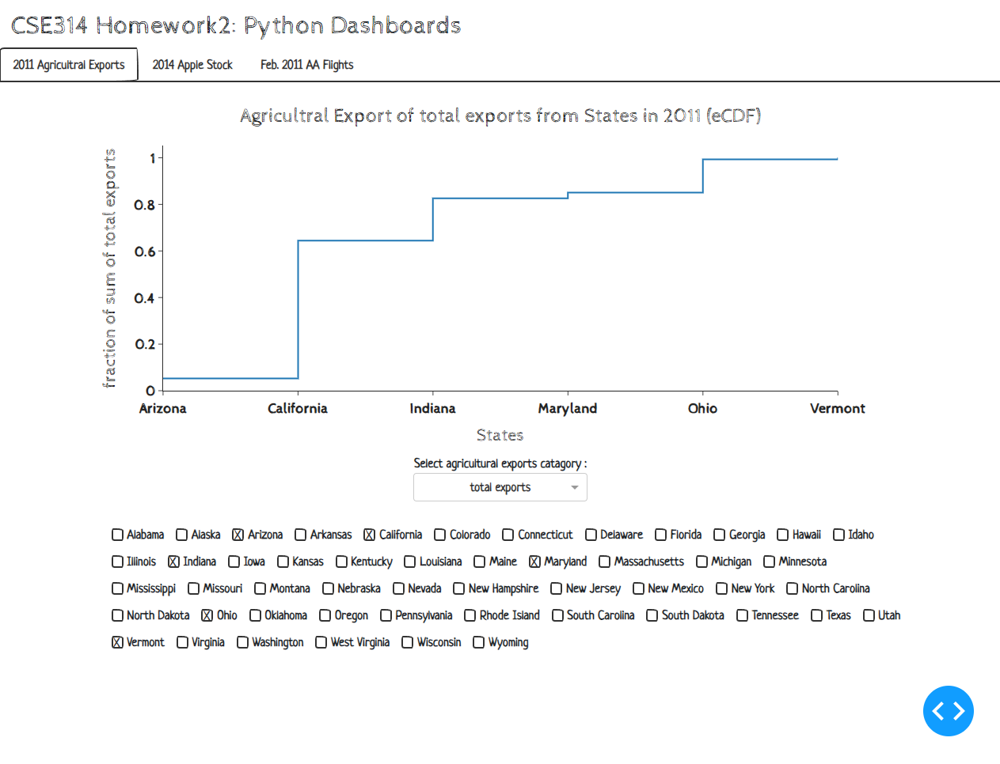
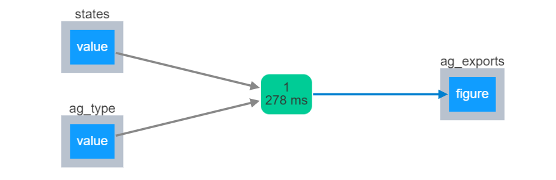

Agricultral Exports Dataset of U.S. (2011)
For full dataset view plotly/datasets/2011_us_ag_exports.csv.
Overview
-
Why the visualization is interesting?
- Users can easily switch between different agricultual product catagory using the dropdown list.
- Any arbitrary number of the chosen states can be compared at the same time.
- This visualization includes eCDF.
-
Why eCDFs are preferable to histograms?
- eCDF is as good as histogram
> The clusters of data are easily observed in histograms. But clusters can also be seen in eCDF by finding the decreasing slopes.
> Histograms are good for identifying the distribution type of data. eCDF can also achieve this by directly apply the Kolmogorov Smirnov test if the CDF of the expected distribution type is plotted. - eCDF is less biased
> In histograms, there is a statistically free parameter: binsize. In one way, you want the binsize infinitesimally small, so that the resolution of the curve becomes perfect. On the other side the binsize has to be big enough so that statistical fluctuations do not destroy the smoothness of the underlying curve. The way you bin the data can result in different spread of data, which may influence how you intepret the result. This is called Binning Bias. - eCDF handles outliers and infinite values more elegantly
> If there is an outlier, the number of bins in the histogram would have to be extended to hold the outlier. If the outlier is far away from the main values and we decide to keep it, the original distribution may become hard to recognize; if we trim the x-axis value, the outlier may not be seen on the diagram at all. In eCDFs, the outlier value is directly visible at the end of the tail. Also the type of the distribution stays visible even with the rescaling of the x-axis as caused by the outlier.
> If there is an infinite value, the histogram is unable to show the value. However, in eCDF infinite values can be detected by a line never reaching the upper(y=1) or lower(y=0) boundary. - eCDF is more informative
> Key values and features like minimum, maximum, median, quantiles, percentiles, etc. can be directly read from the eCDF diagram.
> An arbitrary number of eCDFs can be plotted into the same axes without any problems for comparisons.
- eCDF is as good as histogram
Demo

Callbacks
update_ag_export_fig(states,ag_type) - Update the eCDF figure for the states and ag_type selection
Parameters:
- state: str a list of state names selected by the checklist
- ag_type: str a single agricultral catagory selected by the dropdown
- returns: figure an updated eCDF figure that will be passed into the dcc.Graph component
